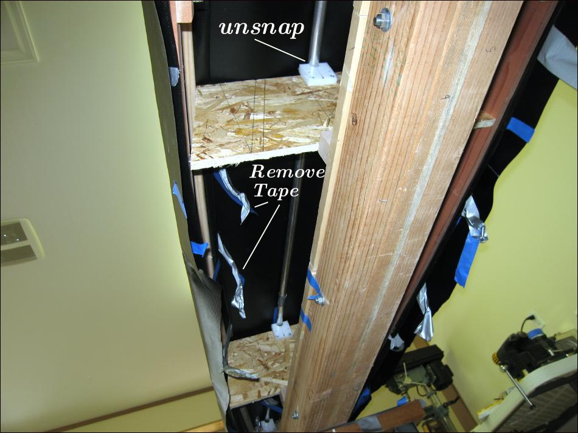

| Sonnet ( Remove Hull) | Menu Last Page Next Page |
|

The first step in removing the hull skin from the skinning frame is to break free all of the tape holding the sleeves and stems to the framework. Next, push up on the keel at each cross section to "unsnap" the tubes from the HDPE connectors.
|
|